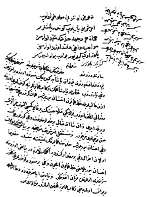

Belge 17: Veziriâzam ‘arzı
Belge 17
“Sa’âdetlü ve devletlü sultanım hazretlerinin hâkipây-i şerîflerine ma’rûz-i bendegî budur ki:
Benim devletlü efendim, dün Kapudân Paşa’ya gidecek müsvedde üzerine bir emr-i şerîf dahi yazdurub ‘azametlü pâdişahımın rikâb-i hümâyûnlarına gönderildi, üzerine izn-i ‘alîleriyle hatt-i hümâyûn ihsân buyurulur ise, hemân göndereyim. Hakk subhâne ve ta’âlâ lütf idüb bolay ki melâ’înin birkaç gemisi alınub cezâları verile idi ve inşallâhu ta’âlâ bir hayırlu hidmet dahi görilür, hemân hüsn-i teveccühleri mercûdur ve mustakil emr-i şerîf mûcebince bir beyaz üzerine hatt-i hümâyûn dahi ihsân buyrulur ise, hidmet-i hümâyûnun temşiyetine mübeyyindir. Mukaddemâ olan ahvâl dahi bir mikdâr kendüye eklemek lâzımdır. Beyaz üzerine ihsân buyrulacak hatt-i hümâyûn içün dahi bir müsvedde gönderildi. Manzûr-i şerîfleri oldukda fermân efendimindir. Ve yarın Ayasofya’da du’â olmagla dîvân olmayacağı rikâb-i hümâyûna telhîs olunmuşdur, fermân sultanımındır.”
H. H. Kösem Sultan’ın emri:
“Ne ‘arz olundu ma’lûmumuz olub emr-i şerîf yazılub gönderilmişdir. Hemân her vechile hidmetine mukayyed olasın; mevâcibe dahi dikkat üzere olasın Yavuz öteye gidiyor, bulub buluşdurasız, kendiniz bilürsiz. Şâhbâz Paşa’dan size gelen kâğıdı niçün göndermediniz. Bize dahi kâğıd gelmedi mi, ne ‘aceb, göndermediniz, gönderesiz, bakalım ne yazmışdır.”
Yorum:
‘Arzı gönderen veziriâzam, Venedik donanmasına karşı hareket edecek kapudân paşaya doğrudan doğruya pâdişah emri “hatt-i hümâyûn” yazılmasını istiyor. Bunun için veziriâzam kendisi bir “müsvedde” yazıp göndermiştir. Buna göre yazılacak hatt-i hümâyûna da durum hakkında biraz bilgi verilmesi gereklidir. Hatt-i hümâyûn, yani doğrudan pâdişahın eli ile yazılmış emir beklenmektedir. Donanmanın Venedik donanması üzerine saldırısı halinde, birkaç gemisi alınabilirse cezaları verilmiş olur. Bu arada 20 kalyonluk bir Venedik donanması Çanakkale Boğazı ağzında stratejik büyük önemi olan Bozca-Ada’ya saldırdı. Girit’ten dönen Osmanlı donanması Bozca-Ada kalesini kuşatma altına alan Venediklileri püskürttü.42Girit’e yardımı kesmek üzere Venedikliler, Çanakkale Boğazı üzerine geldi. Baharda Osmanlı donanması, kapudân-i deryâ Musa Paşa ve serdâr Mehmed Paşa kumandasında gönderildi. Gelibolu’da buluşup Boğaz’ı abluka eden Venedik donanması (26 büyük kalyon) üzerine yürüdüler. Rüzgâr elverişli olmadığından iki donanma arasında top ve tüfek karşılıklı ateşi dışında önemli bir karşılaşma olmadı; Osmanlı donanması adaya vardı, oradan Girit’e hareket etti (Rebîülâhir 1056 / Mayıs 1646). Girit’e başarıyla varan serdâr Mehmed Paşa, Suda limanı önünde çarpışmalara katıldı, çok geçmeden Girit’te öldü.43Girit’te ilk zamanlarda Deli Hüseyin Paşa, bazı kuleleri alarak başarı gösteriyordu. Fakat Venedik donanmasının Boğaz ablukaları dolayısıyla bunalımlar yaşanıyor. Girit’te orduya asker ve erzak yardımı, yaşamsal önemdeydi. Asker maaşları, toplar, mühimmat, silâh ikmali yapılması gerekliydi. Anadolu, Rumeli ve Karaman beylerbeyileri askerleriyle Girit’teki harekâta katılmışlardı. Kandiye kuşatması başlayınca yeniden top, mühimmat ve güçlü bir donanma gerekti.44Venedik gemilerinin Ege denizinde Girit yolu üzerinde kontrolü yüzünden Anadolu’dan asker geçirilmesi sorun oluyordu. Pâdişah hatt-i hümâyûnunda istenen “mühimmât ve hazine gönderilmiştir” diyorsa da, 1647 baharında gönderilen mühimmat gemilerde kaldığından asker ve harçlık konusunda darlık kendini gösterdi. Kandiye kuşatması sonraya bırakıldı. Temmuz ayında Fazlı Paşa donanması, Girit’e varmayı başardı, yeniden kuşatma başladı.45
Veziriâzamın ‘arzında sözü geçen “hatt-i hümâyûn” Naîmâ’da anılan “hatt-i hümâyûn” olmalıdır.46Vekâyınâmelerde hatt-i hümâyûn’un Girit’e varış tarihi 10 Zilka’de 1057/7 Aralık 1647’dir. Hatt-i hümâyûn “istimâlet ve tenbîh ve te’kîdi” içermekteydi. Girit’ten askerin maaşları ve kış için zahîre, Sakız’da bekleyen 800 lağımcı, 300 topçu ve Mısır askerinin yetişmesi İstanbul’a bildirildi. Bu tarihte veziriâzam, Hezarpâre Ahmed Paşa’dır.
Ertesi bahar Venedik donanması yeniden gelip Çanakkale Boğazı’nı abluka altına aldı. Donanma açık denize çıkamadı. Kandiye kuşatmasındaki asker açlıkla karşılaştı.
42 Nâimâ, IV, s. 190-191.
43 Kâtib Çelebi, Fezleke, ondan Nâimâ, IV, s. 195-200, Sultanzâde Mehmed Paşa biyografisi, Naima, IV, s. 200-203.
44 Nâimâ, IV, s. 215-219.
45 Nâimâ, IV, s. 232-237, 4000 yeniçeri kuşatmada hazırdı.
46 Nâimâ, IV, s. 239; Z. Aycibin, “Fezleke – Tahlil ve Metin”, Doktora Tezi, Mimar Sinan Üniversitesi, Sosyal Bilimler Enstitüsü, İstanbul, 2007, s. 998, 1006.